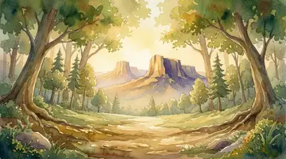

Nature Seed Жолды сызыңыз. Оларды біріктіріңіз.
Браузерде тегін ойнауға болатын сызу арқылы шешілетін физикалық басқатырғыш. Шектеулі сиямен сызық жүргізіңіз, ол Water Drop-ты Seed-ке жеткізетін еңіс жолға, көпірге немесе ұстап қалатын нүктеге айналады. Әр шешілген деңгей акварельді орман көрінісін қайта тірілтеді.
2026 жылғы 18 қыркүйекте 100 деңгеймен, сызық тиімділігі жұлдыздарымен және сақталатын прогреспен шықты. itch.io, Game Jolt және indiexpo-да тегін; мақсат - iOS және Android нұсқасы, ол қолданба дүкендерінде әлі жоқ.
Сызушектеулі сиямен сызыңыз
ҚосылуWater Drop-ді Seed-ге әкеліңіз
Гүлденуорманды қайтарыңыз
Ағымдағы құрастыру ішінде
Сіз сызған нәрсе деңгейдің бөлігіне айналады.
Сіз жүргізген әрбір штрих нақты соқтығыстары бар қатты нысанға айналады, ал Water Drop пен Seed оған әрекет етеді. Сия мен сызықтар саны шектеулі, сондықтан сызықтың пішіні маңызды.
Шығарылым күйі 2026 жылы 18 қыркүйекте шығарылды

Ойынға шолу
Екі кішкентай кейіпкерді табыстыру туралы сызу арқылы шешілетін тыныштандыратын басқатырғыш.
Идея
Жол сызып, Water Drop пен Seed-ті табыстырыңыз және тыныш эскиздің қайта жанданғанын көріңіз.
Шығарылым құрастыруы
Сенсорлық сызуы, сызық тиімділігіне арналған жұлдыздары және сессиялар арасында сақталатын прогресі бар 100 ойнауға болатын деңгей.
Аудитория
Тыныш басқатырғыштарды, жеңіл физиканы, табиғат тақырыбын және асықпайтын мобильді сессияларды жақсы көретін ойыншылар.
Күй
2026 жылғы 18 қыркүйекте шықты, браузерде тегін ойнауға болады. Мақсат - мобильді нұсқа; ол қолданба дүкендерінде әлі жоқ.
Мүмкіндіктер
Nature Seed ойынында не істейсіз.
Сызып шешілетін физикалық жолдар
Әр басқатырғыш рельефтен, Seed пен Water Drop-тан басталады. Ойыншының сызығы оларды қосатын еңіс жолға, көпірге немесе ұстау нүктесіне айналады.
Физиканың анық кері байланысы
Water Drop пен Seed түсінікті қозғалады, сондықтан сәтсіз талпыныс нені өзгерту керегін көрсетеді.
Орманды қалпына келтіру сыйақылары
Деңгейді өтіңіз, сонда эскиз сахна түске және өсіп жатқан ағаштарға толады.
Қысқа деңгейлер, сенсорлық сызу
Деңгейлер қысқа, ал сіз саусақпен сызасыз, бұл телефондағы жылдам сессияларға ыңғайлы.
Ойын циклі
Nature Seed ойынын қалай ойнау керек
- 01-қадамЭскизді оқыңыз
Еңістерді, саңылауларды және кедергілерді, сондай-ақ екі кейіпкерді қосудың ең қауіпсіз жолын іздеңіз.
- 02-қадамСызық сызыңыз
Сызығыңызды сызыңыз. Штрих кейіпкерлер үшін еңіс жолға, бағыттаушыға немесе ұстау нүктесіне айналады.
- 03-қадамРастап, бақылаңыз
Сызықты бекітіп, кейіпкерлердің қалай әрекет ететінін көріңіз. Не жұмыс істегені мен не істемегені бірден көрінеді.
- 04-қадамГүлдену немесе жетілдіру
Water Drop Seed-ке жетсе, орман қайтып оралады. Жетпесе, жаңа білгеніңізді ескеріп, қайта сызыңыз.
Әңгіме / әлем
Эскиз түріндегі орман суды күтіп тұр.
Nature Seed нысандарды бір-біріне итермелеудің орнына нәзік нәрсені қалпына келтіру туралы сызу арқылы шешілетін физикалық басқатырғыш ретінде басталды.
Кейіпкерлер - Seed, Water Drop және ойын барысында эскизден түске оралатын орман. Әр басқатырғыш - шағын тапсырма: жерді зерттеп, жол сызып, суға өсе алатын нәрсеге жетуге көмектесу.
- Дизайн бағыты
- Тыныш физика және көрінетін қалпына келтіру
- Кейіпкерлер
- Water Drop және Seed
- Өзара әрекеттесу
- Сенсорлық сызу
- Шеберлік сыйлығы
- Бір жолды шешу үш жұлдызға ие болады
Қысқаша
Бүгін браузерде тегін, мақсатты платформа - мобильді құрылғылар.
Сізде шектеулі сия және шектеулі сызық саны бар. Оларды Water Drop-ты Seed-ке жеткізуге пайдаланыңыз, содан кейін деңгейді қайта ойнап, шешімді үш жұлдыз үшін бір сызыққа дейін қысқартыңыз.
- Жанр
- Сызу арқылы шешілетін физикалық басқатырғыш
- Мақсатты платформа
- iOS / Android
- Сессия форматы
- Қысқа тыныш деңгейлер
Материалдарды жүктеп алу
Nature Seed баспасөз және жасаушы материалдары
Баспасөзде жарияланымдар, баспагерлердің қарауы және дүкен беті сілтемелері үшін WebP алдын ала қарау файлдары. Толық ажыратымдылықтағы бастапқы файлдар сұраныс бойынша қолжетімді.
Бренд және кейіпкерлер
 Water DropSeed-ке жетуі керек көк кейіпкер.
Water DropSeed-ке жетуі керек көк кейіпкер.
 Seed кейіпкеріWater Drop жетуге тырысатын жасыл кейіпкер.
Seed кейіпкеріWater Drop жетуге тырысатын жасыл кейіпкер.
 Ағаштың өсуіШешкеннен кейін өсетін ағаш.
Ағаштың өсуіШешкеннен кейін өсетін ағаш.
 Орман мәзіріНегізгі мәзір фоны.
Орман мәзіріНегізгі мәзір фоны.
 Ойынның фоныБос ойын аймағы бар деңгей фоны.
Ойынның фоныБос ойын аймағы бар деңгей фоны.
Сызу арқылы шешілетін эскиз деңгейлері
 Эскиз деңгейі 01Шешуге дейінгі эскиз.
Эскиз деңгейі 01Шешуге дейінгі эскиз.
 Эскиз деңгейі 02Шешуге дейінгі эскиз.
Эскиз деңгейі 02Шешуге дейінгі эскиз.
 Эскиз деңгейі 03Шешуге дейінгі эскиз.
Эскиз деңгейі 03Шешуге дейінгі эскиз.
 Эскиз деңгейі 04Шешуге дейінгі эскиз.
Эскиз деңгейі 04Шешуге дейінгі эскиз.
 Эскиз деңгейі 05Шешуге дейінгі эскиз.
Эскиз деңгейі 05Шешуге дейінгі эскиз.
 Эскиз деңгейі 06Шешуге дейінгі эскиз.
Эскиз деңгейі 06Шешуге дейінгі эскиз.
 Эскиз деңгейі 07Шешуге дейінгі эскиз.
Эскиз деңгейі 07Шешуге дейінгі эскиз.
 Эскиз деңгейі 08Шешуге дейінгі эскиз.
Эскиз деңгейі 08Шешуге дейінгі эскиз.
 Эскиз деңгейі 09Шешуге дейінгі эскиз.
Эскиз деңгейі 09Шешуге дейінгі эскиз.
 Эскиз деңгейі 10Шешуге дейінгі эскиз.
Эскиз деңгейі 10Шешуге дейінгі эскиз.
Қалпына келтірілген басқатырғыш көріністер
 01-деңгей қалпына келтірілдіШешкеннен кейін қалпына келеді.
01-деңгей қалпына келтірілдіШешкеннен кейін қалпына келеді.
 02-деңгей қалпына келтірілдіШешкеннен кейін қалпына келеді.
02-деңгей қалпына келтірілдіШешкеннен кейін қалпына келеді.
 03-деңгей қалпына келтірілдіШешкеннен кейін қалпына келеді.
03-деңгей қалпына келтірілдіШешкеннен кейін қалпына келеді.
 04-деңгей қалпына келтірілдіШешкеннен кейін қалпына келеді.
04-деңгей қалпына келтірілдіШешкеннен кейін қалпына келеді.
 05-деңгей қалпына келтірілдіШешкеннен кейін қалпына келеді.
05-деңгей қалпына келтірілдіШешкеннен кейін қалпына келеді.
 06-деңгей қалпына келтірілдіШешкеннен кейін қалпына келеді.
06-деңгей қалпына келтірілдіШешкеннен кейін қалпына келеді.
 07-деңгей қалпына келтірілдіШешкеннен кейін қалпына келеді.
07-деңгей қалпына келтірілдіШешкеннен кейін қалпына келеді.


08-деңгей қалпына келтірілдіШешкеннен кейін қалпына келеді. 09-деңгей қалпына келтірілдіШешкеннен кейін қалпына келеді.
09-деңгей қалпына келтірілдіШешкеннен кейін қалпына келеді.
 10-деңгей қалпына келтірілдіШешкеннен кейін қалпына келеді.
10-деңгей қалпына келтірілдіШешкеннен кейін қалпына келеді.
Әзірлеу хронологиясы
Nature Seed әзірлеу хронологиясы
- 2025 жылдың жазыТүпнұсқа тұжырымдама
Nature Seed байланыс пен табиғатты қалпына келтіру туралы тыныш мобильді басқатырғыш идеясынан басталды.
- қазан 2025 жSeed пен Water Drop келбеті
Біз дизайн құжатын аяқтап, Seed пен Water Drop-ты басты кейіпкерлер етіп таңдадық.
- Желтоқсан 2025 жӘзірлеу басталады
Біз алғашқы деңгейлерді қағазда жоспарлап, сосын құра бастадық, ал негізгі жүйелер ойнауға жарамды болды.
- ақпан 2026 жДеңгейлердің үлкен алғашқы нұсқасы
Деңгейлерді алғаш рет үлкен көлемде өңдеп шығу бізге кейінгі жетілдіру мен баланстауға негіз берді.
- 2026 жылғы наурыз-сәуірМеханика және деңгейді шолу
Біз қосымша механикалар мен жоба деңгейлерін қарап шығып, ойынды тыныш ұстау үшін оларды жеңілдеттік немесе қайта жасадық.
- 2026 жылдың шілдесіТік прототипті өңдеу
Шілдедегі құрастыруда шектеулі сиямен сызу, тиімділік жұлдыздары, сақталатын прогресс және тұрақты сызық генерациясы бір ойнауға болатын циклге біріктірілді.
- 18 қыркүйек 2026 жNature Seed шығарылымы
Ойын Nature Seed атауымен шықты: 100 деңгей, сызық тиімділігі жұлдыздары, сақталатын прогресс және акварельді қалпына келтіру көріністері.
Nature Seed ЖҚСҚ
Nature Seed туралы жиі қойылатын сұрақтар
Nature Seed тегін бе?
Иә. Оны браузерде itch.io, Game Jolt және indiexpo-да тегін ойнауға болады.
Nature Seed шықты ма?
Иә. Ол 2026 жылғы 18 қыркүйекте 100 деңгеймен шықты. iOS және Android нұсқасы - мақсатты платформа, ол қолданба дүкендерінде әлі жоқ.
Nature Seed қандай ойын?
Сызу арқылы шешілетін тыныштандыратын физикалық басқатырғыш. Сіз сызған сызықтар қатты заттарға айналып, Water Drop пен Seed-тің кездесуіне көмектеседі.
Nature Seed ойынын қалай ойнауға болады?
Рельефті оқып, шектеулі сиямен маршрут сызыңыз да, екі кейіпкердің қалай әрекет ететінін көріңіз. Жетпесе, қайта сызыңыз. Сызық аз болса, жұлдыз көп, ал бір сызық үш жұлдыз береді.
Nature Seed ойынын кім жасайды?
WillowinWorlds - мобильді басқатырғыштар мен аркадалар жасайтын тәуелсіз студия.
Nature Seed баспасөз материалдарын пайдалануға бола ма?
Иә, баспасөз, баспагерлердің қарауы және дүкен сілтемелері үшін. Бастапқы файлдар сұрамайынша жабық қалады.
Nature Seed Девлог
Не және қашан өзгерді
- Nature Seed шығарылымы
Nature Seed соңғы атауымен itch.io, Game Jolt және indiexpo-да 100 деңгейі, сызық тиімділігі жұлдыздары және сақталатын прогресі бар тегін браузерлік ойын ретінде шықты.
- 2-деңгей қалпына келтіру және тұрақтылық өтуі
2-деңгей енді сенімді деңгейді орнату, соқтығысты тексеру және аяқтау туралы кері байланыс бар өндірістік фондық жұпты пайдаланады.
- 2026 жылдың шілдесіОйнауға болатын құрастыру
Шілдедегі құрастыру шектеулі сиямен сызуды, тиімділік жұлдыздарын, сақталатын прогресті және қалпына келтіру кері байланысын біріктірді.
- 2026 жылдың сәуіріДеңгейлерді қайта өңдеу
Ішкі шолудан кейін біз күрделілікті азайту және телефонда оқуды жеңілдету үшін бірнеше жоба деңгейін қайта жасадық.
- наурыз 2026 жМеханикаға шолу
Біз қосымша механикаларды сынап, деңгейлерді тығыз сезіндіргендерін алып тастадық.
- ақпан 2026 жДеңгейлердің үлкен алғашқы нұсқасы
Деңгейлерді алғаш рет үлкен көлемде өңдеп шығу кейінгі жетілдіру мен баланстауға негіз болды.
- Желтоқсан 2025 жӘзірлеу басталады
Негізгі жүйелер дизайн құжатынан ойнауға болатын түрге көшті.
- 2025 жылдың жазыТүпнұсқа тұжырымдама
Nature Seed алғашқы нұсқасы байланыс пен табиғатты қалпына келтіру туралы тыныш басқатырғыш идеясы болды.